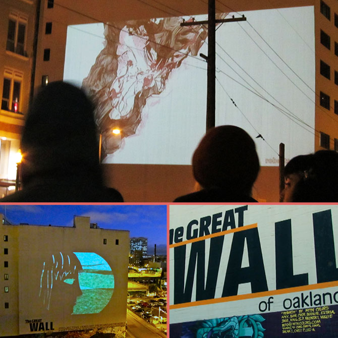

About Us
Voted "Best Film Festival in 2013" by the readers of the East Bay Express, the Save A Kitten at OakCatVidFest returns to the Great Wall on May 10, 2014 with an entirely new #catvidfest program from the Walker Art Center, many more cats and kittens ready for adoption and twice as many cat-themed bands, events and activities! In 2013, the festival donated over 15K to needy cats and kittens, and this year, we hope to donate even more! If you'd like to volunteer make this year's festival another success, please email festival organizers: oaklandcatvidfest@gmail.com.
2013 OakCatVidFest
If you missed the inaugural OakCatVidFest on May 10, 2013, you might want to check out these photos and videos to prepare yourself for the most cat-tastic event of the year.
2013 #catvidfest Reel
Watch last year's #catvdifest Reel, but be prepared because the 2014 #catvidfest Reel is even funnier!
2013 OakCatVidFest Photos
Check out all of the photos from the event from The Furrtographer.
2013 OakCatVidFest Video
2013 Festival Mews
- Internet Cat Videos Go Public | East Bay Express
- LOL and squeeee! It’s Oakland’s Internet Cat Video Festival - Local: In Oakland
- Feline Fans Unite at Internet Cat Video Festival
- Audience at Oakland’s Internet Cat Video Festival Agrees That Cats Are Awesome
- Video Of The Week - A Festival Dedicated To Internet Cat Videos! - Kids News Article
- Catsparella: Internet Cat Video Festival Descends On Oakland
- Oakland hosts 2nd Internet Cat Video Festival (and Grumpy Cat, too) - Los Angeles Times
- Laughter and meows at Oakland’s Internet Cat Video Festival | The Lookout - Yahoo News
- Internet Cat Video Festival | Slideshow | PBS NewsHour | PBS
- Feline Lovers Turn Out For Internet Cat Video Festival : NPR
“What is The Great Wall?”
The Oakland Internet Cat Video Festival is presented by the Great Wall of Oakland, the large-scale urban projection installation in the heart of Oakland’s Uptown. Our small staff and a crew of amazing volunteers are working tirelessly to bring you this cat, art and technology extravaganza.
